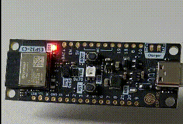

Blinky
Let's see how to create the iconic Blinky.

Change the code in main.rs to this
#![no_std]
#![no_main]
use esp32c3_hal::{
clock::ClockControl, pac::Peripherals, prelude::*, timer::TimerGroup, Delay, Rtc, IO,
};
use esp_backtrace as _;
#[riscv_rt::entry]
fn main() -> ! {
let peripherals = Peripherals::take().unwrap();
let system = peripherals.SYSTEM.split();
let clocks = ClockControl::boot_defaults(system.clock_control).freeze();
// Disable the RTC and TIMG watchdog timers
let mut rtc = Rtc::new(peripherals.RTC_CNTL);
let timer_group0 = TimerGroup::new(peripherals.TIMG0, &clocks);
let mut wdt0 = timer_group0.wdt;
let timer_group1 = TimerGroup::new(peripherals.TIMG1, &clocks);
let mut wdt1 = timer_group1.wdt;
rtc.swd.disable();
rtc.rwdt.disable();
wdt0.disable();
wdt1.disable();
esp_println::println!("Hello World");
// Set GPIO7 as an output, and set its state high initially.
let io = IO::new(peripherals.GPIO, peripherals.IO_MUX);
let mut led = io.pins.gpio7.into_push_pull_output();
led.set_high().unwrap();
// Initialize the Delay peripheral, and use it to toggle the LED state in a
// loop.
let mut delay = Delay::new(&clocks);
loop {
led.toggle().unwrap();
delay.delay_ms(500u32);
}
}
We need two new types in scope: IO and Delay
On ESP32-C3-DevKit-RUST-1 there is a regular LED connected to GPIO 7. If you use another board consult the data-sheet.
Please note that most dev-boards today use an addressable LED which works different and is beyond the scope of this book. In that case you can also connect a regular LED to some of the free pins (and don't forget to add a resistor).
Here we see that we can drive the pin high, low or toggle it.
We also see that the HAL offers a way to delay execution.